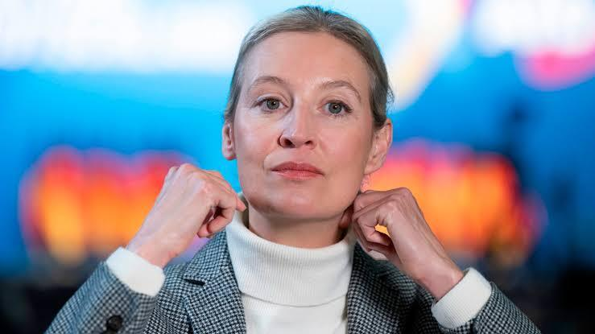
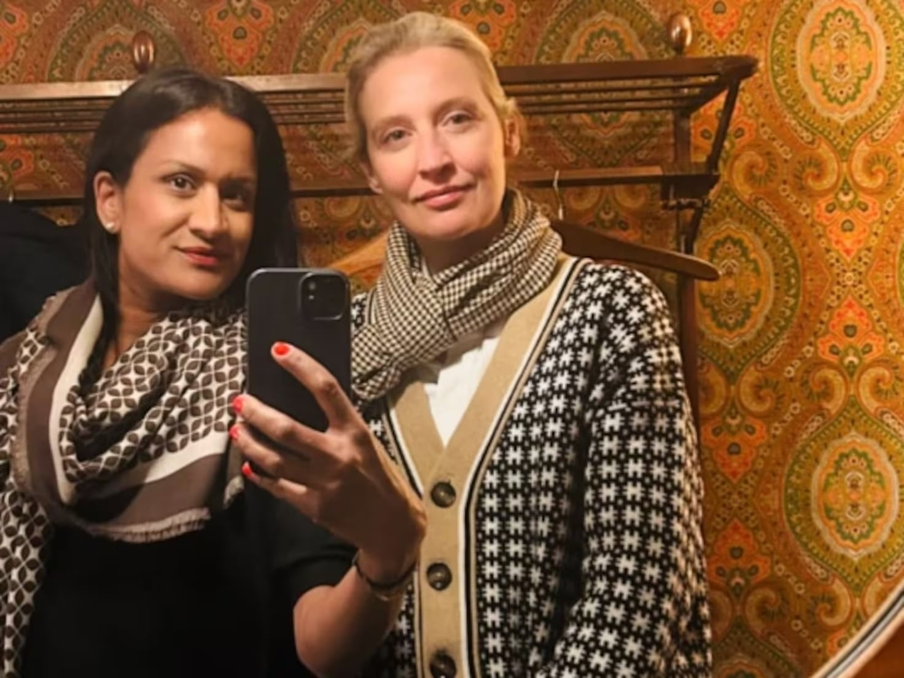
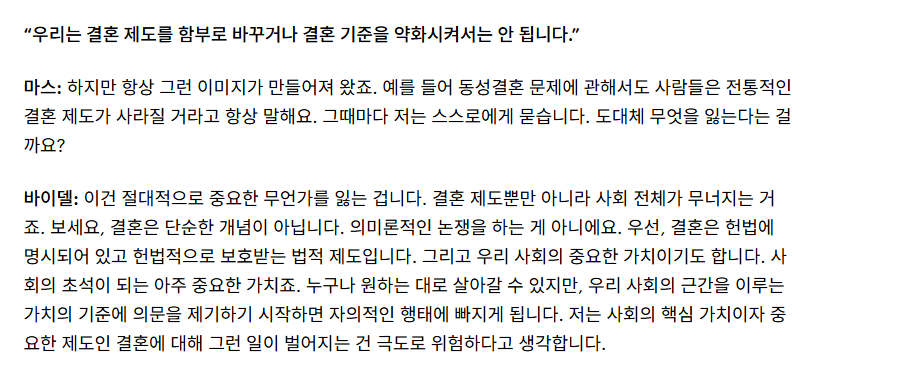

40대 여성 정치인인 알리체 바이델은 현재 독일의 극우정당 afd의 당수로, afd를 이끌고있음. afd의 지지율은 (특히 동독을 중심으로) 급격히 증가하고 있는데, 실제로 작센안할트 주와 메클렌부르크포어포메른 주에서 3~40%대의 득표율을 올림으로써 정치에서 승승장구하고 있음.
근데 알리체 바이델의 특이한점이 있음

알리체 바이델은 극우정당 afd의 당수지만 스리랑카인 여성 사라 보자드와 혼인 관계에 있으며 사라 보자드는 스위스에서 영화 감독으로 활동하고 있다는 것임.
알리체 바이델은 2007년 사라 보자드와 연인사이가 되었으니 2026년인 지금 기준으로는 19년차에 해당된다고 볼 수 있는데....
거기다 심지어 자녀가 2명인데, 입양한게 아니라 정자 기증을 받아 사라 보자드가 직접 출산한 아이들이다. 정자 기증자가 백인인지 유색인종인지는 모르겠지만 알리체 바이델이 인종주의자가 아니라는건 맞을지도...

하지만 알리체 바이델은 동성결혼에 반대하는 입장이며 afd의 최근 노선도 무슬림 이민자만 문제삼는게 아닌 전체 유색인종 이민자에 대해서도 공격적으로 변하고 있기 때문에 스리랑카인 여성과 결혼해서 자식까지 두고 있는 알리체 바이델은 항상 모순적이라는 소리가 따라온다.
뭐냐 시발..